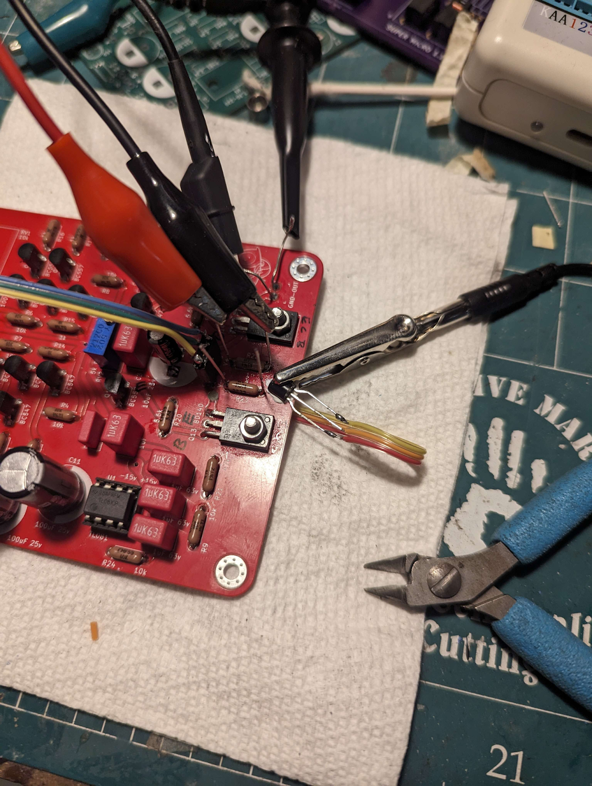
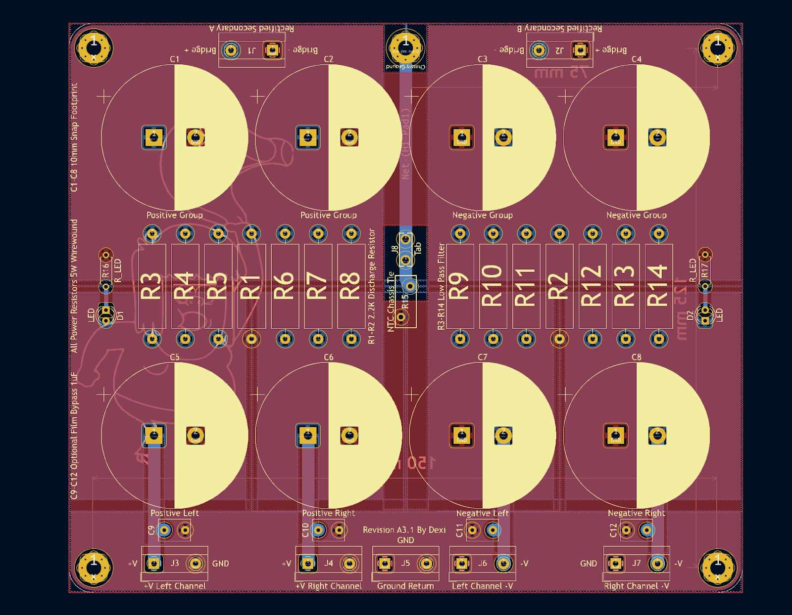
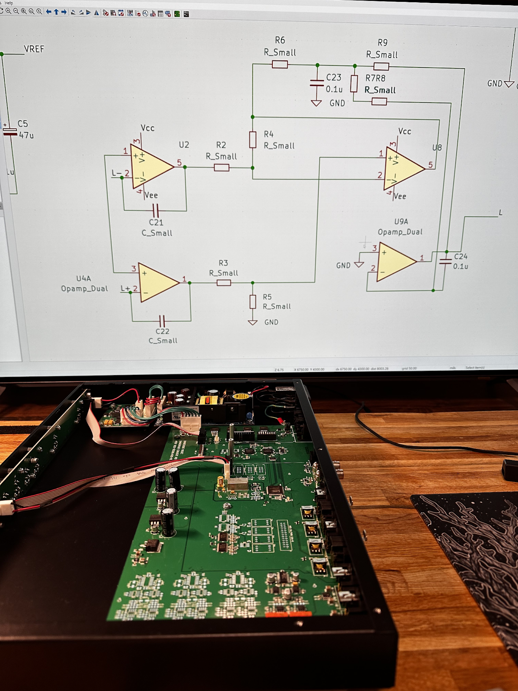
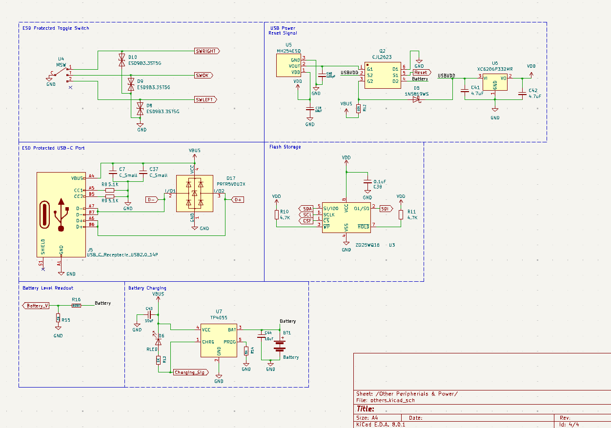

This is a collection of all my past and ongoing work - Dexi Lin
Note that not all projects may be totally complete and are still ongoing.
Contents:
- Associate A (Associated with Pioneer SL)
- A is a true non-negative feedback Class A/AB headphone amplifier with an opamp DC servo.
- Super Regulator Dual
- The Super Regulator Dual is a linear dual rail regulated power supply for up to +/- 20v. It squeezes maximum performance out of the classic LM317 and 337 complement with a CRC input and a capacitance multiplier output.
- New New Original F5 Power Supply
- The New New Original F5 Power Supply is a decoupled dual rail linear power supply for high fidelity stereo amplifiers that improves upon the original F5 CRC power supply design.
- Associate B (Associated with the Pass B1 Buffer Preamplifier)
- B is a “no gain, no pain” DC coupled stereo buffer preamplifier that offers a constant output impedance.
- Associate P (Associated with PhonoClone)
- P is an ultra low noise preamplifier for moving magnet phono cartridges that conforms to the RIAA equalization curve.
- The Low TIM Amplifier: Dexi’s Version
- The Dexi’s version design seeks to combine the best aspects of the Leach Low TIM Amplifier with a clean and modular design.
- Ultimate 8 Channel DAC
- The Ultimate 8 Channel DAC is a reverse engineered DMC2 scaled up to output 8 channels with support for DSP engines running on a linux SBC.
- Ultimate Wide Radiating Speakers
- The Ultimate Wide Radiating speakers best utilizes the lowest distortion drivers in existence from Bliesma and Purifi (T25A/PTT4.5) and does so in a small size. Designed for wide radiation using a BEM simulated waveguide.
- Universal Access Card
- The Universal Access Card is a credit card sized badge with an E-Ink display that looks and functions like an access card. It runs on the Nordic nRF52840 platform with emulation software developed by the RFID Research Team.
Last update:
- August 17
- HV580 Added
Associate A (Associated with Pioneer SL)
A is a true non-negative feedback Class A/AB headphone amplifier with an opamp DC servo.
The original Pioneer SL circuit:
Pioneer developed the Super Linear circuit in the 1980’s and used it as the pre-drivers in their best and highest end amplifiers. Although the distortion is fairly low, this circuit makes no use of global negative feedback.
The secret lies in its fully complementary design. The input stage is functionally similar to a Common Emitter voltage gain stage, but with using both PNP and NPN connected together in a reverse mode to cancel out inherent non-linearities. If the transistors are reasonably matched and operated under the same conditions, they will exhibit similar distortion.
Pioneer A-09 Power Amplifier (1992) Service Manual: Input Stage
The Associate A:
Recreating the Pioneer SL circuit in modern times, the BC547 and its complement BC557 have been selected. They are widely available, high performance and relatively inexpensive.
The PCB design work uses the Star Ground technique. There are many advantages of star grounds when working with low frequency analog signals such as audio. At low frequencies, a ground plane is no longer effective at ensuring the shortest path to ground. It is instead better to direct ground manually to a central point.
Leftover space on the PCB was reserved for a floating copper pour which is used as a heatsink for the output transistors.
The initial spin had issues with thermal stability. If the bias was set to more than 20mA cold, it would keep increasing as the board heats up and eventually causes the transistors to fail in a thermal runaway. The solution has only one additional component in the second spin.

Testing the thermal compensation fix on the original PCB.
A thermal compensation transistor (Vbe Multiplier) now lives next to the output transistors. Even with freeze spray and heat gun interruptions, the bias recovers and snaps right back to its original state.

Simulation of Temperature VS Bias Point after thermal compensation fix.
This means the Associate A is stable to run in Class A if so desired. The bias has been tested stable up to 100mA, do note that the PCB surface area is not enough to keep it cool beyond this point. It will be very hot to the touch. The SL circuit does not exhibit much Class AB crossover distortion anyway, keeping it at 30mA (measured as 30mV across the 1 ohm emitter resistors) is the safest option.
A specialized opamp integrator acts as a DC servo and provides DC only feedback in the system; it nulls the DC component even if it is present on the input. DC servos are a must for a direct coupled headphone amp like this, it protects the headphones from power supply failures and upstream offset. It also turns out that the BC547/557 complement is not particularly easy to match well in hFE…… save the trouble and let the servo take care of any potential offset. Measured offset does not exceed a few millivolts. Of course, this is depending on the intrinsic offset of the opamp.
There still exists an input coupling capacitor in this design as the DC servo feeds directly into the input of the SL stage. For future revisions, I would consider removing the input coupling capacitor and connecting the DC servo after the SL stage. Although this reduces the DC gain, it is equally as effective and completely removes all capacitors in the signal path.
Final design in SPICE.
Simulations show that the non NFB design is very high bandwidth. The input is restricted with a low pass filter to avoid potential oscillations/HF noise.
Family Picture with the Super Regulator Dual Rail power supplies. Looking very good!
Power is good until about 4W at 8 Ohms. THD measured at 0.03% is not exceedingly low, but impressive considering that this amplifier has zero NFB. Subjectively, I think it sounds incredible. Non NFB amplifiers truly have to be appreciated by ear and not by measurements. Sadly they are becoming increasingly rare and expensive.
Super Regulator Dual
The Super Regulator Dual is a linear dual rail regulated power supply for up to +/- 20v. It squeezes maximum performance out of the classic LM317 and 337 complement with a CRC input and a capacitance multiplier output.

The original PCB spin had one of the regulators mounted upside down. The lesson to learn is that in KiCAD, TO-220 footprints with dashed lines signify the component to be placed tab side up. This has been fixed on the second spin.
Working revision with correctly mounted regulators. Ground plane PCB without capacitance multiplier.
The goal of this PCB design is to be beautifully symmetrical and cleanly laid out. The choice of classic LM317 and 337 complements is due to their well regarded performance and “forever” product line longevity.
Schematic
Super Regulator Dual with added capacitance multiplier
Super Regulator Dual newest revision with star ground layout and capacitance multiplier. To be built and measured, the winner in performance takes the crown.
New new original F5 Power Supply
The original F5 power supply was convoluted, hard to build and lacked instructions. Especially annoying were the use of jumper wires and the jamboree of connectors needed to install the safety chassis ground.
From the F5 build guide: Notice how the safety ground inrush limiter has to be installed outside the PCB
The New Original design by Thatcher is much improved and features an integrated safety ground inrush limiter, but it is no longer available for purchase. The New New Original should combine the best aspects of the F5 power supply with a clean layout and easy to populate layout.
I bought a kit from Thatcher to use. Although I liked the integrated safety ground, the AC inrush limiters were not useful to my application. The PCB is also more convoluted than I would've liked to see with many unnecessary traces that could be replaced with lower impedance copper pours.

A decoupled dual rail power supply based on the original design by Pass. Besides group filtering, each channel receives its own filter capacitor, effectively making the channels decoupled from each other. As part of the CRC, power resistors form a low pass filter to further reduce mains noise. Optional are film bypass capacitors that improve the high frequency abilities of the individual channel filter capacitors, this ensures that high frequency noise does not escape the low pass filter. Also integrated to the PCB are bleeder resistors and a safety ground inrush limiter both of which ensure safe operation.
Very clean design with minimal use of traces, annotated nets to use with copper pours. Well labeled Silkscreen texts are also on board which makes the PCB easy to populate even without instructions.
Associate B (Associated with the Pass B1 Buffer Preamplifier)
B is a no gain, no pain DC coupled stereo volume control that offers a constant output impedance
The original B1 by Nelson Pass:
Many customers have requested a simple attenuator volume control from Pass Labs. The problem with passive attenuators is that output impedance is not constant, this causes potential issues in frequency response roll-off especially with long cable runs. The Pass B1 is a simple but great sounding volume control that doesn't have the typical problems associated with a passive attenuator. Inside is an active loaded Jfet common drain buffer that offers a constant output impedance without added noise or gain.
Build of the original B1, notice the large film coupling capacitors inside.
Associate B:
The original B1 relied on fairly large and high quality film coupling capacitors that were especially expensive to purchase. To improve upon this aspect, Associate B is DC coupled by using a symmetrical power supply; it can operate with no capacitors at all in the signal path. The IDSS of the Jfets used must be matched in order to minimize DC offset.
Matching Jfets by hand is not a trivial task, but thanks to linear systems it is no longer necessary. The LSK398 matched pair in TO-71-6/SOIC-8 package is easy to solder and provides identical (if not better) performance to the famous 2SK170. Like the original B1, a gate resistor (R2) must be used to suppress potential oscillations and high frequency noise. Note that the thermal noise of this resistor directly impacts the noise of the output. It is best to choose a Mil-Spec resistor such as the Vishay Dale RN55 for the highest performance, higher thermal stability the better.
Should the power supply be asymmetrical at startup, there is a delayed relay that mutes the output for around 5 seconds to prevent DC offset and thumps. There shouldn't be any DC present during normal operation. R1 is a pull-down resistor that prevents the gate from floating in case there is poor wiper contact on the volume potentiometer; a floating gate could cause a not-so-kind amount of DC offset. If the upstream source has offset, remove the internal jumpers that bypass the input coupling capacitors (C1). The volume knob nicely illuminates when the output is on.
Other nice features include a pair of relays to switch between 2 inputs and on board footprint for a high quality Alps RK27 potentiometer. The RK27 is the best audio potentiometer for a sane price, though beware that many fakes are out there which exhibit bad channel imbalance. All components besides connectors are soldered directly to the PCB making this very easy to populate, much easier to build than the original B1.
As with all builds in the Associates family, it runs off the Super Regulator Dual rail regulated power supply. It is recommended to configure the power supply to output +/- 12v, that’s plenty of headroom to handle the voltage swing of any input source (tested up to +22dBu). This PCB is the exact same length as the Super Regulator and should be easy to mount in any chassis.

Revision 2 vertical layout PCB, not yet finalized. Change Jfet Package from SOIC to TO and add input coupling capacitors and power LEDs.
Super Regulated 580v Pro Bias Source
The energizer for an electrostatic headphone is nothing more than a power supply. The quality of the Bias voltage is as important as the rest of the audio chain. Unfortunately the SRD7 (and many like it) lack fundamental parts to ensure safe operation, let alone low noise output.
The new design starts with a transformer. This is important for safety as the transformer provides effective mains isolation. Next, the voltage must be regulated, this is explored in different ways as shown below. Finally, large capacitance with the appropriate bleed down and ballast resistor feed clean Bias to the electrostatic drivers.
Initial prototype:
The initial prototype (built by my friend username WhatCouldGoWrong on youtube) features an XP power DC/DC converter fed by a regulated linear power supply. The XP module provides an isolated DC output at the appropriate voltage and does so with almost no switching noise and less than 30 mVpp ripple. This is a fairly safe and easy option for a high performance Bias source.
The Second method does away with the DC/DC converter and uses a traditional voltage regulator to directly regulate the high voltage DC. This is done with a Maida circuit which utilizes a Cascode Mosfet to drop the voltage before a floating voltage regulator. In simulation, the performance looks to be better than the DC/DC module. To be built and tested.
Associate P (Associated with PhonoClone)
P is an ultra low noise RIAA preamplifier for moving magnet phono cartridges.
Original Circuit:
Driving the input of an opamp with a Jfet differential pair is not novel by any means. In fact, there is no specific origin to this circuit. Doing so greatly reduces noise and increases input impedance.
Example Circuit: Kenwood Basic C2 (1984) Service Manual, Phono Preamplifier Stage
From the reverse engineering work done by RJM Audio on the PhonoClone, we have the knowledge to build an accurate RIAA equation network from only 2 capacitors and 2 resistors.
Associate P:
The operation is simple, 2 knobs allow the user to precisely adjust cartridge loading and gain. Cartridge loading is an important adjustment to make. In my opinion, best results can be achieved if tuned by ear instead of specific values. With the adjustment knobs, cartridge loading can be set up to 100k ohms and gain ranges from 0 to 55db.
Using ultra low noise matched pair Jfets from Ti, the Jfets form a differential pair that drives the input of an audio Op-Amp. On the feedback side is an accurate RIAA equalization circuit. Optional is a subsonic filter to suppress dangerously high powered rumbles from a warped record.
This gives P a lot of flexibility with any MM cartridge setup, there will be no problems regardless of the output level on the phono cartridge. Besides its highly adjustable gain and loading, P has the lowest noise amongst most phono preamplifiers due to good parts selection.
Beautiful RIAA Response shown in simulation.
Always follow the datasheet….. and thanks to Ti for catering to the specific DIY audio crowd with the creation of this Jfet. Specific examples on implementing degeneration resistors for the highest performance have been extremely helpful.
Ultimate 8 Channel DAC
The Ultimate 8 Channel DAC is a reverse engineered DMC2 scaled up to have 8 channels with support for DSP engines running on a linux SBC
Why Linux SBC as an i2s source?
DSP
- Turns out CPUs are quite powerful at DSP tasks at an acceptable latency. A Raspberry Pi 5 is able to support nearly unlimited convolution taps at any sample rate. Hardware DSP chips such as the Analog Devices SigmaDSP lineup pale in comparison.
- The CamillaDSP convolution engine is a multi platform audio processor that is just fantastic. It features advanced pipeline options and multi-threaded performance.
- Modified kernels/distributions such as DietPi and TinyCoreLinux are extremely lightweight and low overhead.
Connectivity
- A websocket server is included with CamiliaDSP which allows for easy interfacing with other applications.
- USB Audio Gadget Subsystem is able to identify as an UAC2 compliant audio device to any host computer. This allows low latency, high resolution (over 96kHz sample rate) and bit-perfect connection with any computer over USB without the addition of any drivers.
- Plenty of support for wireless audio streaming, ranging from Spotify connect with Spotifyd daemon to Bluetooth audio input with BlueZ.
Digital Audio Performance
- i2s sourced directly from GPIO pins are easy to reclock and de-jitter. Commercial products such as the Pi2AES have achieved great success by breaking barriers in achieving the lowest jitter.
Listing requirements for the Ultimate DAC 8
IO
- Multi-channel i2s input with single BCLK and WS line
- Galvanic isolation on incoming i2s signal
- Standardized GPIO supports RPI. Includes i2c, i2s and power management
- Additional GPIO for standalone operation and user interface options
Digital
- JetPLL clock synthesizer minimizes jitter with on board clock reference
- Discrete DFF reclocking on all SD lines further increases jitter performance
- Footprint support for Crystek CCHD ultra low phase noise oscillators
- Multi-domain oscillators for perfect multiples of 44.1Khz and 48Khz sample rate
Operation
- Driverless operation with any i2s master
- Built in power sequencing
- Frequency counter and automatic sample rate detection
- Automatically generates the correct MCLK frequency based on BCLK and WS
- Support for power standby modes and control for separate analog stage power supply
- All DAC options are exposed, including analog volume attenuation.
- Zero Flag Detector may be used to control the power of other devices
- Simply write to i2c registers to change settings
Analog
- Full DC coupled output stage without any capacitors in the signal path
- Active current to voltage converter for optimal THD, external voltage reference
- Active low pass filter
- THAT outsmarts provides floating transformer like output, short proof, cold-ground SE ok
- Selectable output reference level via jumpers
- This aims to be a reverse engineered DMC2 DAC and Analog stage with some improvements that makes connecting consumer (2v RCA, 4v XLR) devices easy.
Power
- “Always on” power supply for logic circuits and i2s master
- Separate External Analog stage power supply
- It is recommended to use a tracking dual rail power supply for the analog stage, this negates the need for output muting as both rails will start perfectly balanced.
- Separate External Digital stage power supply
- On board regulation for clocking, logic, and reference voltages
- Zoned grounds PCB design
2 Channel DSD Version (Possible ideas)
- DAC runs in external filter mode, bypassing internal oversampling
- AKM DSD Delta Sigma modulator as external filter, using the latest AKM digital technologies with the beloved DMC2 DAC should yield some interesting results.
- Summed Mono DAC Channels for higher DNR
DMC2 Reverse Engineering first attempt (Failed). There are many components underneath the PCB that were not probed, this requires a second attempt to get correct.


Correct reverse engineering of DAC chip supporting circuits and output stage (excl. I/V and LPF)
Hidden on the Raspberry Pi 4-5’s USB-C Power port is their OTG Data connections. The USB Audio Gadget module can be loaded and allows for the RPI to act as an USB audio sink.
For the first time, the Raspberry Pi 5 supports multiple i2s channels with a modified kernel and device tree. This will be the i2s master for this DAC.
Next steps: The audio Precision APx555 is up and running today! The original DC2 will be promptly measured using industry standard procedures (thank you GoldenSound for the help)
Some playing around with distortion analyzers and the APx555
Ultimate Wide Radiating Speakers
The Ultimate Wide Radiating speakers best utilizes the lowest distortion drivers on the market from Bliesma and Purifi (T25A/PTT4.5) and does so in a small size. Design utilizes BEM simulated waveguides.
Controlled Directivity
- Waveguide Optimized tweeter using BEM Simulation. The tweeter should achieve a very wide radiation of +/- 50 degrees all the way up to 20kHz. Special care should be taken into consideration for such a wide radiation pattern, aggressive roundovers should be applied to the cabinet. This can also be simulated with BEM although it is very computationally heavy.
Low Distortion
- Low distortion drivers with distortion optimized filter network. Pay special attention to the impedance of the crossover network. High impedance peaks at specific frequencies may improve distortion due to lowered motor hysteresis. See purifi application notes for more information. https://purifi-audio.com/blog/app-notes-2/low-distortion-filter-for-ptt6-5x04-naa-11
Size
- The speaker should be under 5L. Ports may not be optimal for this small size, instead consider using passive radiators with tuned weights. A Linkwitz transform may also be applied.
Flexible Tone & Flatness
- Since BEM simulations return fairly accurate normalized polar responses, it is best to design the crossover slopes and filters with such data without paying attention to the frequency response.
- The in room response may not be predicted correctly without proper CEA 2034 data, therefore final tuning should be done in room, outside of simulation.
- For most flexibly, DSP should be used with each driver on its own DAC and Amplifier
CAD the Blesma T25A In a yet to be optimized waveguide (original design by AugerPro).
Thanks to Bliesma for actually providing the diaphragm profile and R&D Team for providing AKABAK software for free.
Optimal port size for the Purifi PTT4.5, looks like ports cannot effectively be used with this woofer due its outrageous size requirement.
Initial “sanity check” simulation mesh model. Such low resolution is only valid up to around 8kHz. This uses much less processing power and speeds up the initial simulation to ensure that the setup is correct.
To simulate placing the waveguide on an infinite baffle, the model must contain an additional front layer to use as an interface from the interior surface to exterior.
The Low TIM Amplifier: Dexi’s Version
TIM, Transient Intermodulation Distortion, is problematic in amplifiers with low bandwidth and improperly designed negative feedback. TIM was a hot topic in the 80’s, leading to many of the top brands competing for high speed, low feedback and DC coupled designs. One of my favorite pieces from the era is the Harman Kardon HK770 designed by Maiti Otala, the same person who came up with the concept of TIM. HK770 is a beautiful amplifier inside out with a perfectly modular design. The input driver sits on cards that can easily slide out, making it extremely easy to repair.

Leach is also a fan of low TIM amplifiers and the goal of the Leach Amp is to be low feedback and high speed. The Dexi’s version build seeks to combine the best aspects of the Leach Amp and the HK770.
The schematics have been redrawn in SPICE to be easily digestible
A new protection system is in the concept stage. Using optoisolators and non-contact hall effect current sensors, this protection system is able to sense overcurrent and DC offset situations. Compared to the original protection circuit, the transistors are not currently limited. Instead a low RDSon mosfet SSR which replaces traditional mute relays cuts off the output if overcurrent is detected, effectively protecting the amplifier from driving into dead shorts.
For the physical design of the amplifier, a steel H beam is used for its great structure, low cost and high surface area for heat dissipation. The shape is perfect for an amplifier as the power transformer can be further isolated from the rest of the amplifier.
MUR820 Diodes in TO-220 have been selected as the discrete rectifier in this amplifier. These are high recovery speed diodes, about 100x the speed of regular rectifier diodes. The diodes are given just enough surface area to not exceed max junction, but they do run hot which softens the recovery. These two aspects combined yield almost zero ringing from reverse recovery time. Optional to populate is a snubber circuit to further suppress ringing.
Universal Access Card
This is an RFID badge that looks and functions like an access card. It runs emulation software developed by the RFID team. Although the proof of concept is complete, more work is needed to complete the product.
Hardware Features
- Credit Card Sized Overall Footprint
- 3.7in 4 color Eink display (GDEM037F51)
- Nordic nRF52840 BLE NFC MCU
- On board JTag Header
- Onboard power management and rechargeable coin cell battery
- Ceramic SMD Bluetooth antenna
- PCB Coil NFC antenna
- USB-C Port, support for charging with 2.0 Data
- USB bootloader support for firmware flashing
- Read and Emulate NFC and Select RFID Cards
- Emulation Software developed by RFID Research Team
- Round Toggle Switch User interface with RGB Led indicator
